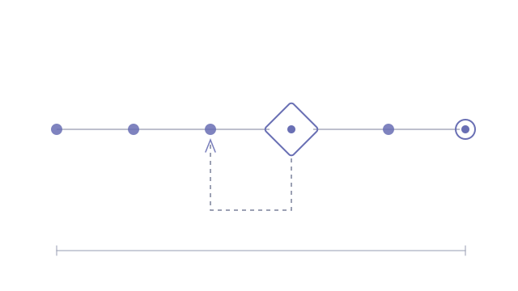

Getting a new hire from accepted offer to first day is a long chain of small obligations spread across several people and systems. Nothing about it is difficult; all of it is easy to drop. The interesting constraint is that it cannot simply be automated away. Offer letters and contracts need a human to approve them, and the automation has to make that approval easy rather than another thing to chase.
- A run is created from a row in the team's own tooling, with no access to the automation platform required, and steps are instantiated with owners and dependencies
- Each owner gets a direct message with action buttons; daily chases escalate, and steps with no mapped owner escalate rather than going silently unnotified
- Offer letter and contract are generated from branded templates with conditional clause selection, swapping whole paragraphs by exact-text replacement, with a loud failure if the anchor text is missing
- Approval gates with a real rework loop: approve, or request changes with a required reason, which reopens the drafting step and re-fires the gate
- Every state transition writes an audit row; scheduled ticks are idempotent and weekday-aware
A self-running pipeline covering tracking, chasing, document generation and approval, verified end to end through full reject → fix → re-approve cycles. Running as a pilot in test mode, with every notification routed to one inbox until it goes live.
- n8n (orchestration)
- Slack · interactive forms, send-and-wait
- Google Docs & Drive APIs
- Collaborative-docs platform as state store
The approval gate is the product
It would have been easier to build something that generated the paperwork and emailed it onward. That version would not have survived contact with the people who have to sign their name to it. An offer letter is a legal document with someone's salary in it, and the person approving it needs to be able to say no in a way the system actually respects.
So the gate is not a checkpoint the automation passes through. It is a state the run can sit in and come back out of. Requesting changes demands a reason, reopens the drafting step, and re-fires the gate when the new draft is ready. That loop is what makes the automation trustworthy: the reviewer is not being asked to rubber-stamp, they are being given a real veto with a defined path back. Escalating unowned steps comes from the same instinct, since work with no name against it is the most likely thing to vanish, so the system refuses to let it sit quietly.
Where the data is allowed to live
Compensation was the constraint that shaped the architecture. It has to reach the offer letter, and it must never be stored in the pipeline's own state. That single rule decided when documents get generated: at form-submission time, in the same pass that captures the figure, because that is the only moment it is legitimately in hand.
The consequence is a system with a deliberate sharp edge. Regenerate a document later and it comes back with placeholders where the numbers were, because the numbers are genuinely gone. That is not a limitation to be smoothed over; it is the constraint working. Designing where sensitive data is allowed to exist, rather than encrypting it everywhere and hoping, tends to produce a system you can explain to the people whose data it is.